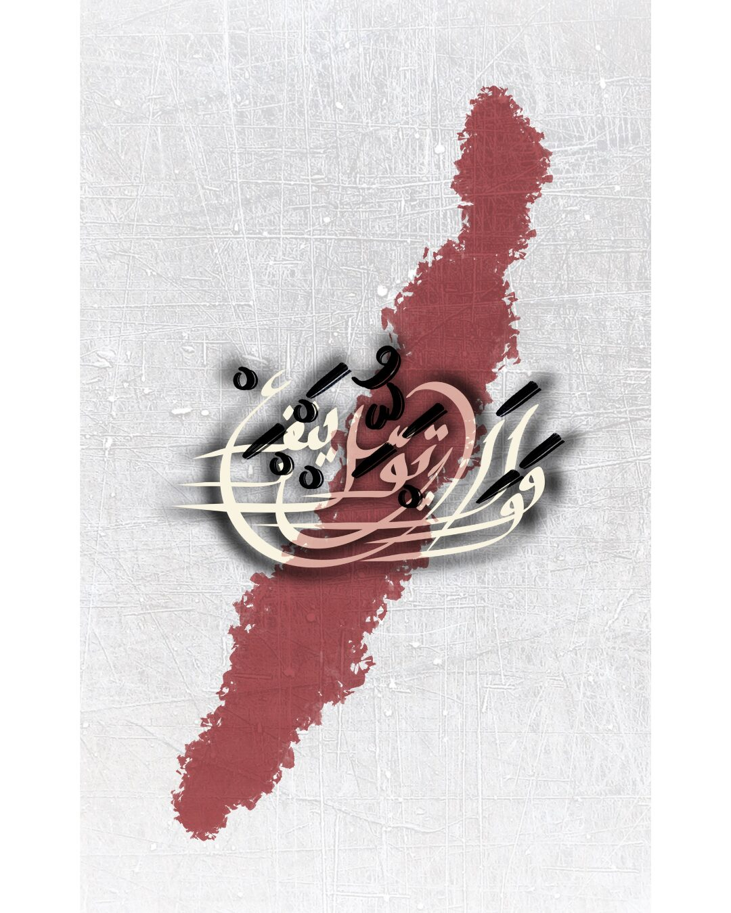
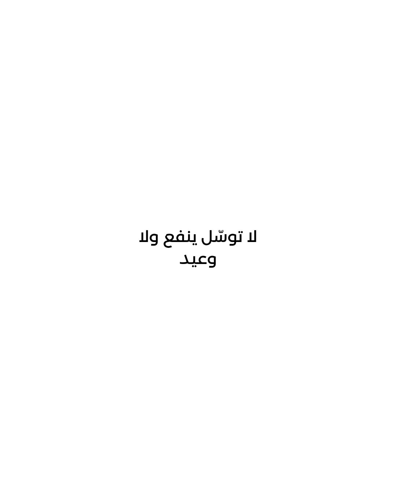
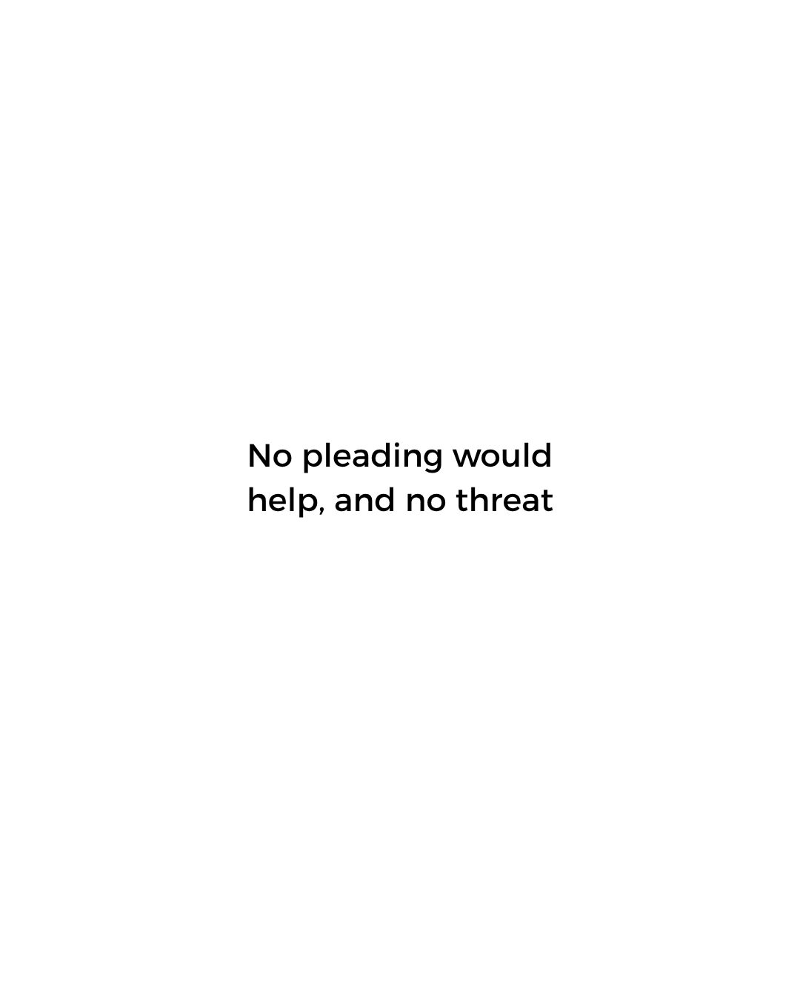
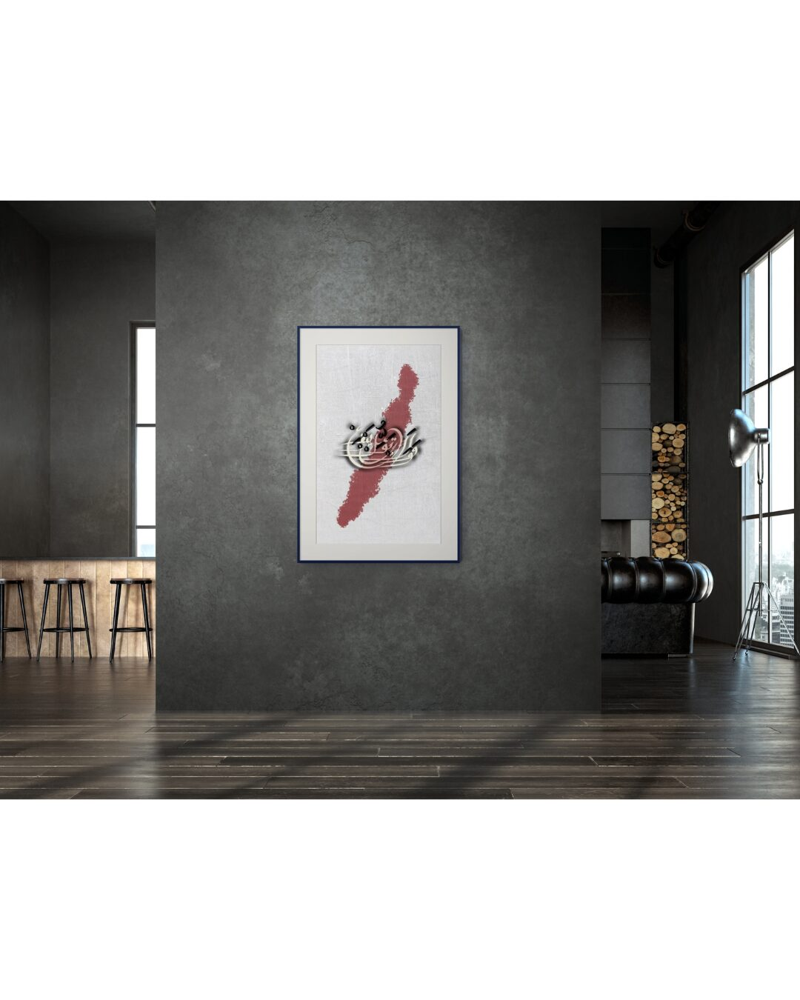
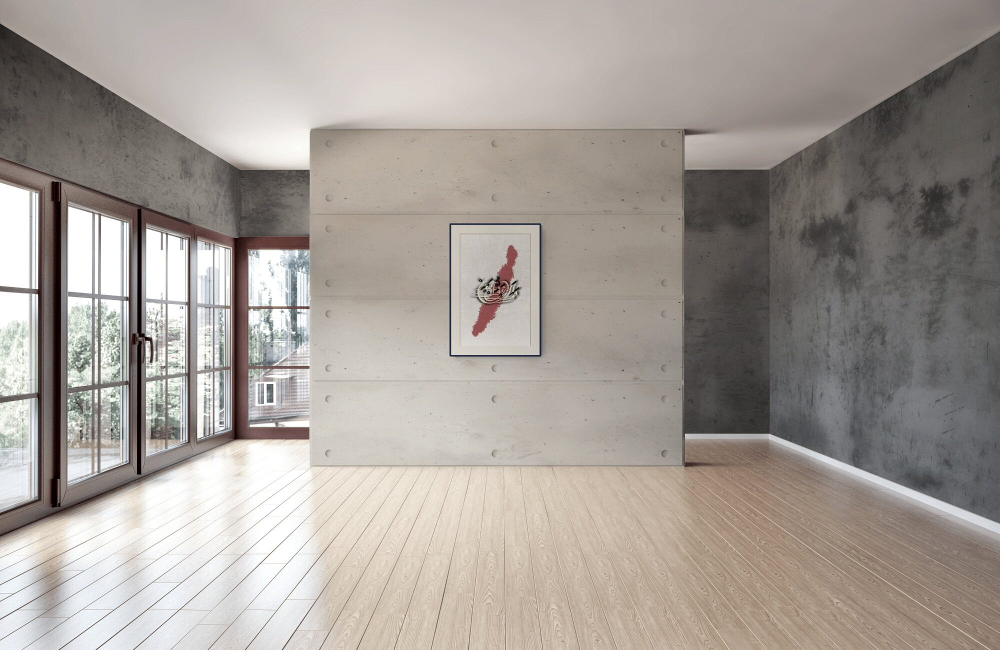
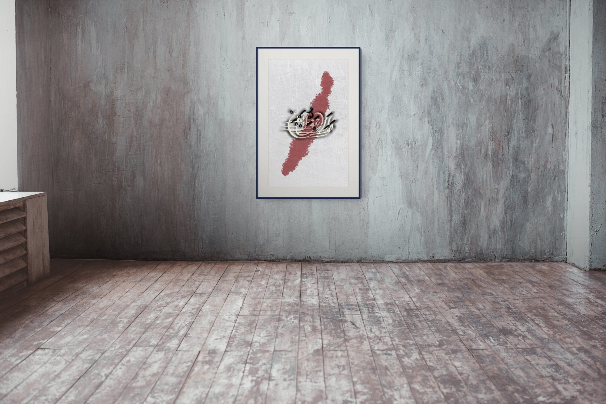

لا توسّل ينفع ولا وعيد
No pleading would help, and no threat.
الغياب · Absence

There is a specific kind of despair that belongs to the person who has tried everything — who has pleaded and then gone silent, who has stayed and then left, and found that neither gesture changes anything. This line does not dramatise the feeling. It simply states it. It arrived as something already known to the body, a sentence that had been true for a long time before it found its words.
A deep crimson mark cuts diagonally across a cool, scratched linen ground — less a brushstroke than a wound, or a fact. The calligraphy does not sit on top of it; it is caught inside it, cream and black ink tangled together, neither floating free nor fully grounded. The surface beneath carries the memory of texture, of something worn and reworked. The composition does not offer resolution. It holds the moment before resignation becomes peace — the exact place where absence still burns.





Ask about الغياب
Editions are small and made after the conversation. Tell me the format you have in mind and the wall it is going to.
Enquire about this work